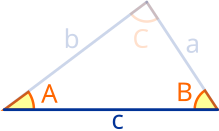
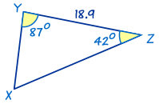

Solving ASA Triangles
"ASA" means "Angle, Side, Angle"
 |
"ASA" is when we know two angles and a side between the angles. |
To solve an ASA Triangle
- find the third angle using the three angles add to 180°
- then use The Law of Sines to find each of the other two sides
Example 1

In this triangle we know:
- angle A = 76°
- angle B = 34°
- and c = 9
It's easy to find angle C by using 'angles of a triangle add to 180°':
C = 180° − 76° − 34° = 70°
We can now find side a by using the Law of Sines:
asin(A) = csin(C)
asin(76°) = 9sin(70°)
a = sin(76°) × 9sin(70°)
a = 9.29 to 2 decimal places
Similarly we can find side b by using the Law of Sines:
bsin(B) = csin(C)
bsin(34°) = 9sin(70°)
b = sin(34°) × 9sin(70°)
b = 5.36 to 2 decimal places
Now we have completely solved the triangle: we have found all angles and sides.
Example 2

This is also an ASA triangle.
First find angle X by using 'angles of a triangle add to 180°':
X = 180° − 87° − 42° = 51°
Now find side y by using the Law of Sines:
ysin(Y) = xsin(X)
ysin(87°) = 18.9sin(51°)
y = sin(87°) × 18.9sin(51°)
y = 24.29 to 2 decimal places.
Similarly we can find z by using the Law of Sines:
zsin(Z) = xsin(X)
zsin(42°) = 18.9sin(51°)
z = sin(42°) × 18.9sin(51°)
z = 16.27 to 2 decimal places.
All done!